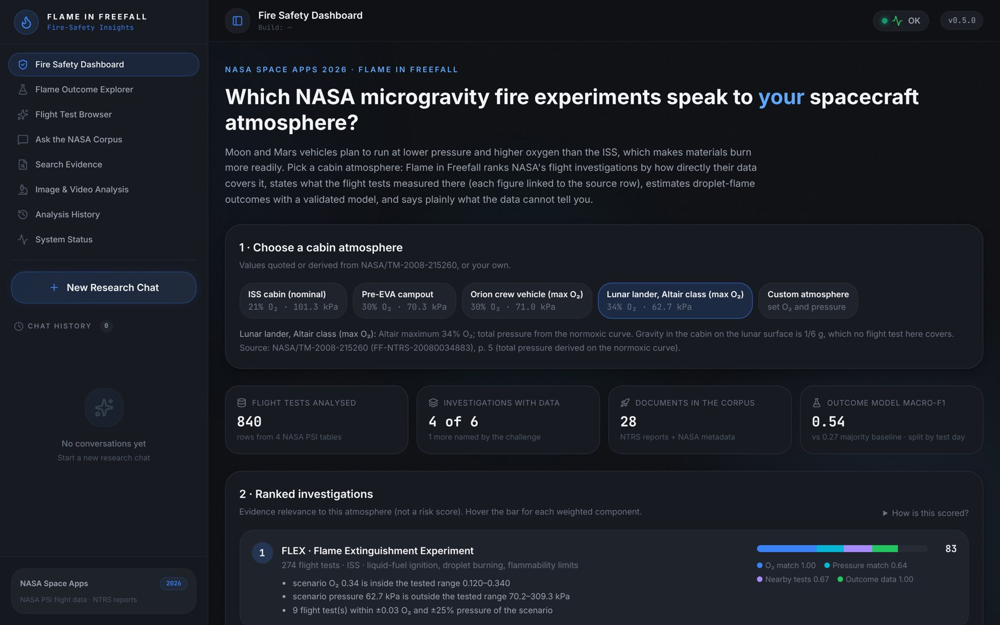
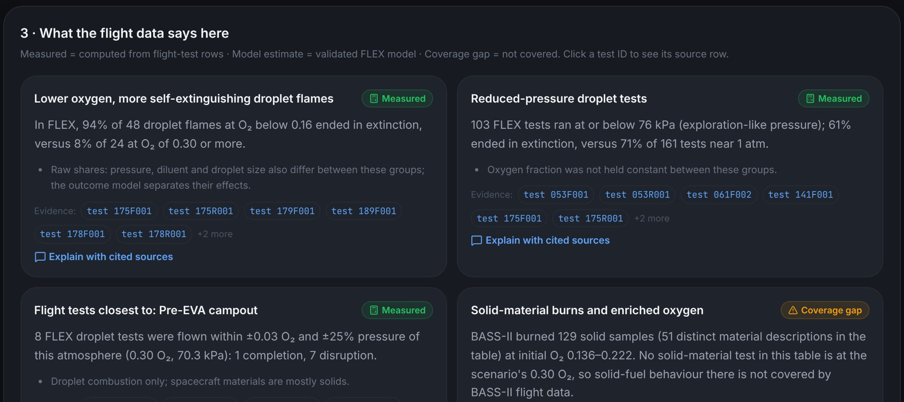

The project objective, and the problem it solves: turning NASA's microgravity combustion data into direct, sourced fire-safety answers for any spacecraft cabin atmosphere.
So results from ground flammability tests do not transfer directly to a spacecraft cabin.
More oxygen makes materials burn more readily.
Source: NASA/TM-2008-215260 (in the project corpus).
NASA has flown decades of combustion experiments on orbit: BASS, FLEX, Saffire, SPICE, ACME and more.
Their results are spread across:
Nothing connects them to the question a designer actually has, and nothing shows where the evidence stops.
A mission designer asks
Today there is nowhere to get a direct, sourced answer: it takes weeks of reading tables and reports, and the gaps stay invisible.
Our answer is a fire-safety dashboard. You pick a cabin atmosphere (ISS, pre-EVA, Orion, lunar lander, or your own O₂ and pressure) and it:
NASA flight investigations by how directly their data covers that atmosphere.
Each investigation in NASA's own words, with a source link.
What the flight tests measured there; every number linked to its NASA table cell.
Droplet-flame outcomes with a validated model that refuses to extrapolate.
States plainly what the data cannot tell you. No data is never shown as no risk.

Shown: lunar lander, Altair class (34 % O₂, 62.7 kPa). FLEX ranks first with 9 flight tests flown nearby.

840 flight tests (FLEX, BASS-II, SPICE, SAFFIRE-I), ISA-Tab metadata, 24 NTRS reports, flight video. All public.
Every value keeps the ID of its source cell. OCR recovers 35 garbled report pages.
Canonical variables, ranking, insights, outcome model, knowledge graph.
One contract (0.6.0) for people and AI agents, plus 16 AURA agent tools.
Ranking, outcome explorer, test browser, cited chat, knowledge graph.
| Result | What the dashboard says |
|---|---|
| Covered | FLEX ranks first: 9 of its flight tests were flown nearby. |
| Gap | BASS-II solid-material tests stop at 22.2 % O₂, so they do not cover it. |
| Refuses | The model declines to estimate: 62.7 kPa is below the lowest FLEX test pressure (70.2 kPa). |
Absence of data is reported as a gap, never as absence of risk.
See which atmospheres have flight evidence and where testing is missing, before choosing a cabin atmosphere.
Go from a question to the NASA reports (NASA-STD-6001 testing, flammability limits) with citations.
Browse 840 flight tests cell by cell, with provenance and data-quality flags.